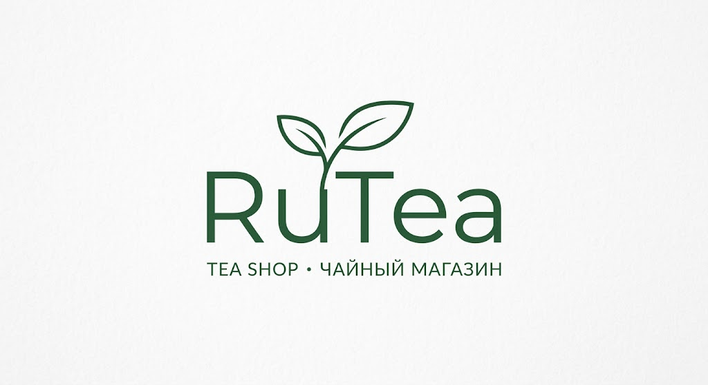
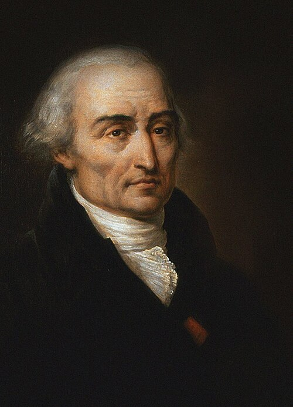

О нас

Добро пожаловать в RuTea - место, где начинается правильное чаепитие. Мы верим, что хорошая чашка чая способна поставить мир на паузу и сделать любой день немного лучше. Мы не просто продаем чай, мы собираем коллекцию лучших вкусов со всего мира: от классических китайских улунов и бодрящих пуэров до уютных травяных и ягодных сборов. Каждый сорт в нашем каталоге мы дегустируем и отбираем лично.
Популярные сорта
| Название | Вид | Цена за 100 г |
|---|---|---|
| Да Хун Пао | Улун | 690 ₽ |
| Шу Пуэр | Пуэр | 540 ₽ |
| Эрл Грей | Черный чай | 390 ₽ |
Отзывы
"Еще со времен своих публикаций, я заметил, что ничто лучше не снимает паранойю как чашка крепкого пуэра от RuTea. Доставка работает настолько безопасно, что АНБ даже не догадывалась, что я всегда брал у них чай."
"Это лучший чай в истории чая, поверьте мне. Покупая их чай вы совершаете прекрасную сделку"
"В течение долгих лет в посольстве моим главным источником истины был именно этот улун. RuTea публикует абсолютно прозрачные составы своих сборов - никаких скрытых ароматизаторов."

"Я долго искал точку устойчивого равновесия в этой Вселенной, и нашел её на дне кружки с Эрл Греем от RuTea. Баланс бергамота и терпкости абсолютно идеален, минимизируя действие и максимизируя удовольствие. Если бы я открыл этот магазин раньше, аналитическая механика далась бы мне гораздо легче!"